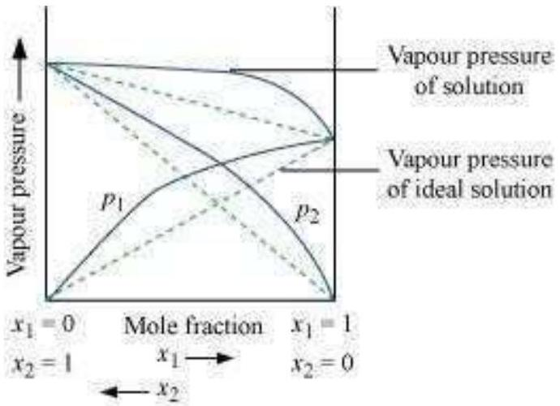
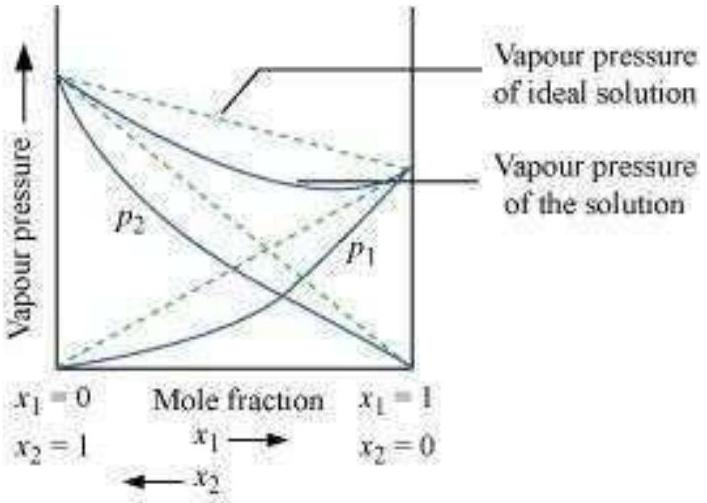
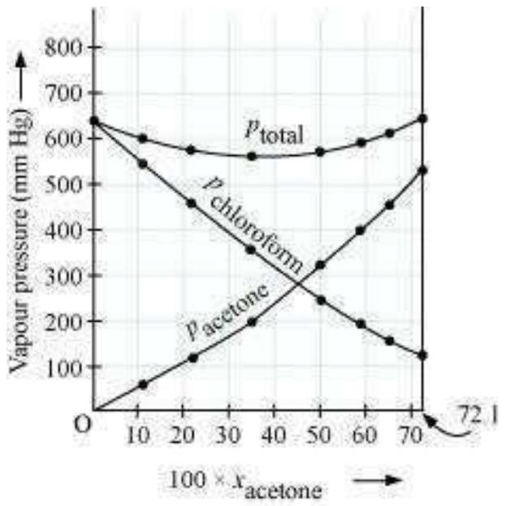

Calculate the mole fraction of ethylene glycol (C2 H6 O2) in a solution containing 20 % of C2 H6 O2 by mass.
Calculate the molarity of a solution containing 5 g of NaOH in 450 mL solution.
Calculate molality of 2.5 g of ethanoic acid (CH3 COOH) in 75 g of benzene.
If N2 gas is bubbled through water at 293 K , how many millimoles of N2 gas would dissolve in 1 litre of water? Assume that N2 exerts a partial pressure of 0.987 bar. Given that Henry's law constant for N2 at 293 K is 76.48 kbar.
Vapour pressure of chloroform (CHCl3) and dichloromethane (CH2 Cl2) at 298 K are 200 mm Hg and 415 mm Hg respectively. (i) Calculate the vapour pressure of the solution prepared by mixing 25.5 g of CHCl3 and 40 g of CH2 Cl2 at 298 K and, (ii) mole fractions of each component in vapour phase.
The vapour pressure of pure benzene at a certain temperature is 0.850 bar. A non-volatile, non-electrolyte solid weighing 0.5 g when added to 39.0 g of benzene (molar mass 78 g mol-1 ). Vapour pressure of the solution, then, is 0.845 bar. What is the molar mass of the solid substance?
18 g of glucose, C6 H12 O6, is dissolved in 1 kg of water in a saucepan. At what temperature will water boil at 1.013 bar? Kb for water is 0.52 K kg mol-1.
The boiling point of benzene is 353.23 K. When 1.80 g of a non-volatile solute was dissolved in 90 g of benzene, the boiling point is raised to 354.11 K. Calculate the molar mass of the solute. Kb for benzene is 2.53 K kg mol-1
45 g of ethylene glycol (C2 H6 O2) is mixed with 600 g of water. Calculate (a) the freezing point depression and (b) the freezing point of the solution.
1.00 g of a non-electrolyte solute dissolved in 50 g of benzene lowered the freezing point of benzene by 0.40 K. The freezing point depression constant of benzene is 5.12 K kg mol-1. Find the molar mass of the solute.
200 cm3 of an aqueous solution of a protein contains 1.26 g of the protein. The osmotic pressure of such a solution at 300 K is found to be 2.57 × 10-3 bar. Calculate the molar mass of the protein.
2 g of benzoic acid (C6 H5 COOH) dissolved in 25 g of benzene shows a depression in freezing point equal to 1.62 K. Molal depression constant for benzene is 4.9 K kg mol-1. What is the percentage association of acid if it forms dimer in solution?
0.6 mL of acetic acid (CH3 COOH), having density 1.06 g mL-1, is dissolved in 1 litre of water. The depression in freezing point observed for this strength of acid was 0.0205° C. Calculate the van't Hoff factor and the dissociation constant of acid.
Calculate the mass percentage of benzene (C6 H6) and carbon tetrachloride (CCl4) if 22 g of benzene is dissolved in 122 g of carbon tetrachloride.
Calculate the mole fraction of benzene in solution containing 30% by mass in carbon tetrachloride.
Calculate the molarity of each of the following solutions: (a) 30 g of Co(NO3)2 .6 H2 O in 4.3 L of solution (b) 30 mL of 0.5 M H2 SO4 diluted to 500 mL.
Calculate the mass of urea ( NH2 CONH2 ) required in making 2.5 kg of 0.25 molal aqueous solution.
Calculate (a) molality (b) molarity and (c) mole fraction of KI if the density of 20% (mass / mass) aqueous KI is 1.202 g mL-1.
H2 S, a toxic gas with rotten egg like smell, is used for the qualitative analysis. If the solubility of H2 S in water at STP is 0.195 m, calculate Henry's law constant.
Henry's law constant for CO2 in water is 1.67 × 108 Pa at 298 K. Calculate the quantity of CO2 in 500 mL of soda water when packed under 2.5 atm CO2 pressure at 298 K.
The vapour pressure of pure liquids A and B are 450 and 700 mm Hg respectively, at 350 K .
Find out the composition of the liquid mixture if total vapour pressure is 600 mm Hg .
Also find the composition of the vapour phase.
Vapour pressure of pure water at 298 K is 23.8 mm Hg. 50 g of urea (NH2 CONH2) is dissolved in 850 g of water. Calculate the vapour pressure of water for this solution and its relative lowering.
Boiling point of water at 750 mm Hg is 99.63°C.
How much sucrose is to be added to 500 g of water such that it boils at 100°C.
Calculate the mass of ascorbic acid (Vitamin C, C6 H8 O6) to be dissolved in 75 g of acetic acid to lower its melting point by 1.5°C. Kf = 3.9 K kg mol-1.
Calculate the osmotic pressure in pascals exerted by a solution prepared by dissolving 1.0 g of polymer of molar mass 185,000 in 450 mL of water at 37°C.
Define the term solution.
How many types of solutions are formed? Write briefly about each type with an example.
Give an example of a solid solution in which the solute is a gas.
Define the following terms:
Mole fraction
Molality
Molarity
Mass percentage.
Concentrated nitric acid used in laboratory work is 68% nitric acid by mass in aqueous solution. What should be the molarity of such a sample of the acid if the density of the solution is 1.504 g mL-1 ?
A solution of glucose in water is labelled as 10% w / w, what would be the molality and mole fraction of each component in the solution? If the density of solution is 1.2 g mL-1, then what shall be the molarity of the solution?
How many mL of 0.1 M HCl are required to react completely with 1 g mixture of Na2 CO3 and NaHCO3 containing equimolar amounts of both?
A solution is obtained by mixing 300 g of 25% solution and 400 g of 40% solution by mass.
Calculate the mass percentage of the resulting solution.
An antifreeze solution is prepared from 222.6 g of ethylene glycol (C2 H6 O2) and 200 g of water. Calculate the molality of the solution. If the density of the solution is 1.072 g mL-1, then what shall be the molarity of the solution?
A sample of drinking water was found to be severely contaminated with chloroform (CHCl3) supposed to be a carcinogen. The level of contamination was 15 ppm (by mass):
express this in percent by mass
determine the molality of chloroform in the water sample.
What role does the molecular interaction play in a solution of alcohol and water?
Why do gases always tend to be less soluble in liquids as the temperature is raised?
State Henry's law and mention some important applications.
The partial pressure of ethane over a solution containing 6.56 × 10-3 g of ethane is 1 bar. If the solution contains 5.00 × 10-2 g of ethane, then what shall be the partial pressure of the gas?


What is meant by positive and negative deviations from Raoult's law and how is the sign of Δmix H related to positive and negative deviations from Raoult's law?
An aqueous solution of 2% non-volatile solute exerts a pressure of 1.004 bar at the normal boiling point of the solvent.
What is the molar mass of the solute?
Heptane and octane form an ideal solution. At 373 K, the vapour pressures of the two liquid components are 105.2 kPa and 46.8 kPa respectively. What will be the vapour pressure of a mixture of 26.0 g of heptane and 35 g of octane?
The vapour pressure of water is 12.3 kPa at 300 K .
Calculate vapour pressure of 1 molal solution of a non-volatile solute in it.
Calculate the mass of a non-volatile solute (molar mass 40 g mol-1 ) which should be dissolved in 114 g octane to reduce its vapour pressure to 80 %.
A solution containing 30 g of non-volatile solute exactly in 90 g of water has a vapour pressure of 2.8 kPa at 298 K.
Further, 18 g of water is then added to the solution and the new vapour pressure becomes 2.9 kPa at 298 K.
Calculate:
molar mass of the solute
vapour pressure of water at 298 K.
A 5% solution (by mass) of cane sugar in water has freezing point of 271 K. Calculate the freezing point of 5% glucose in water if freezing point of pure water is 273.15 K.
Two elements A and B form compounds having formula AB2 and AB4. When dissolved in 20 g of benzene (C6 H6), 1 g of AB2 lowers the freezing point by 2.3 K whereas 1.0 g of AB4 lowers it by 1.3 K . The molar depression constant for benzene is 5.1 K kg mol-1. Calculate atomic masses of A and B.
At 300 K, 36 g of glucose present in a litre of its solution has an osmotic pressure of 4.98 bar.
If the osmotic pressure of the solution is 1.52 bars at the same temperature, what would be its concentration?
Suggest the most important type of intermolecular attractive interaction in the following pairs.
n-hexane and n-octane
I2 and CCl4
NaClO4 and water
methanol and acetone
acetonitrile (CH3 CN) and acetone (C3 H6 O).
Based on solute-solvent interactions, arrange the following in order of increasing solubility in n-octane and explain. Cyclohexane, KCl, CH3 OH, CH3 CN.
Amongst the following compounds, identify which are insoluble, partially soluble and highly soluble in water?
phenol
toluene
formic acid
ethylene glycol
chloroform
pentanol.
If the density of some lake water is 1.25 g mL-1 and contains 92 g of Na+ions per kg of water, calculate the molarity of Na+ions in the lake.
If the solubility product of CuS is 6 × 10-16, calculate the maximum molarity of CuS in aqueous solution.
Calculate the mass percentage of aspirin (C9 H8 O4) in acetonitrile (CH3 CN) when 6.5 g of C9 H8 O4 is dissolved in 450 g of CH3 CN.
Nalorphene (C19 H21 NO3), similar to morphine, is used to combat withdrawal symptoms in narcotic users. Dose of nalorphene generally given is 1.5 mg . Calculate the mass of 1.5 × 10-3 m aqueous solution required for the above dose.
Calculate the amount of benzoic acid (C6 H5 COOH) required for preparing 250 mL of 0.15 M solution in methanol.
The depression in freezing point of water observed for the same amount of acetic acid, trichloroacetic acid and trifluoroacetic acid increases in the order given above.
Explain briefly.
Calculate the depression in the freezing point of water when 10 g of CH3 CH2 CHClCOOH is added to 250 g of water. Ka = 1.4 × 10-3, Kf = 1.86 K kg mol-1.
| Initial conc. | C mol L-1 | 0 | 0 |
|---|---|---|---|
| At equilibrium | C(1-α) | C α | C α |
| Initial moles | 1 | 0 | 0 |
|---|---|---|---|
| At equilibrium | 1-α | α | α |
19.5 g of CH2 FCOOH is dissolved in 500 g of water. The depression in the freezing point of water observed is 1.0° C. Calculate the van't Hoff factor and dissociation constant of fluoroacetic acid.
| Initial conc. | C mol L-1 | 0 | 0 | |
|---|---|---|---|---|
| At equilibrium | C(1-α) | C α | C α | Total = C(1+α) |
Vapour pressure of water at 293 K is 17.535 mm Hg . Calculate the vapour pressure of water at 293 K when 25 g of glucose is dissolved in 450 g of water.
Henry's law constant for the molality of methane in benzene at 298 K is 4.27 × 105 mm Hg. Calculate the solubility of methane in benzene at 298 K under 760 mm Hg.
100 g of liquid A (molar mass 140 g mol-1 ) was dissolved in 1000 g of liquid B (molar mass 180 g mol-1 ). The vapour pressure of pure liquid B was found to be 500 torr. Calculate the vapour pressure of pure liquid A and its vapour pressure in the solution if the total vapour pressure of the solution is 475 Torr.

Vapour pressures of pure acetone and chloroform at 328 K are 741.8 mm Hg and 632.8 mm Hg respectively. Assuming that they form ideal solution over the entire range of composition, plot ptotal , pchloroform , and pacetone as a function of xacetone . The experimental data observed for different compositions of mixture is:
| 100 × xacetone | 0 | 11.8 | 23.4 | 36.0 | 50.8 | 58.2 | 64.5 | 72.1 |
|---|---|---|---|---|---|---|---|---|
| pacetone / mm Hg | 0 | 54.9 | 110.1 | 202.4 | 322.7 | 405.9 | 454.1 | 521.1 |
| pchloroform / mm Hg | 632.8 | 548.1 | 469.4 | 359.7 | 257.7 | 193.6 | 161.2 | 120.7 |
Plot this data also on the same graph paper.
Indicate whether it has positive deviation or negative deviation from the ideal solution.
| 100 × × acetone | 0 | 11.8 | 23.4 | 36.0 | 50.8 | 58.2 | 64.5 | 72.1 |
|---|---|---|---|---|---|---|---|---|
| Pacetone / mm Hg | 0 | 54.9 | 110.1 | 202.4 | 322.7 | 405.9 | 454.1 | 521.1 |
| Pchloroform / mm Hg | 632.8 | 548.1 | 469.4 | 359.7 | 257.7 | 193.6 | 161.2 | 120.7 |
| Ptota ( m m H g ) | 632.8 | 603.0 | 579.5 | 562.1 | 580.4 | 599.5 | 615.3 | 641.8 |
Benzene and toluene form ideal solution over the entire range of composition. The vapour pressure of pure benzene and toluene at 300 K are 50.71 mm Hg and 32.06 mm Hg respectively. Calculate the mole fraction of benzene in vapour phase if 80 g of benzene is mixed with 100 g of toluene.
The air is a mixture of a number of gases. The major components are oxygen and nitrogen with approximate proportion of 20% is to 79% by volume at 298 K. The water is in equilibrium with air at a pressure of 10 atm. At 298 K if the Henry's law constants for oxygen and nitrogen at 298 K are 3.30 × 107 mm and 6.51 × 107 mm respectively, calculate the composition of these gases in water.
Determine the amount of CaCl2(i = 2.47) dissolved in 2.5 litre of water such that its osmotic pressure is 0.75 atm at 27° C.
Determine the osmotic pressure of a solution prepared by dissolving 25 mg of K2 SO4 in 2 litre of water at 25° C, assuming that it is completely dissociated.